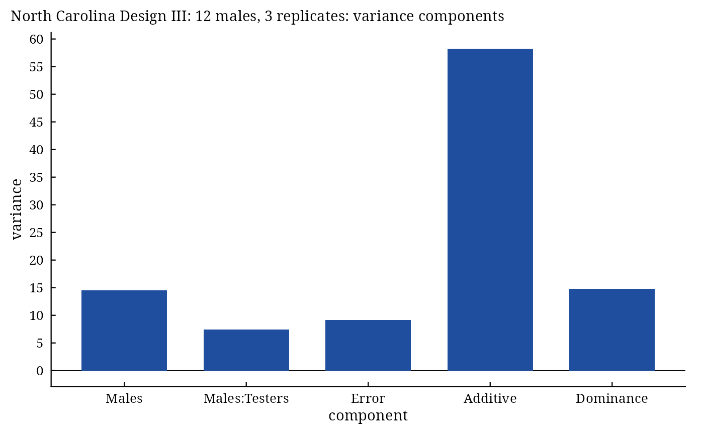

NCDesign() analyses the three mating designs of Comstock and Robinson (1948, 1952) grown in randomized
complete blocks: Design I (females nested within males), Design II (every male crossed with every female) and
Design III (males backcrossed to the two inbred parents of their population). It gives the analysis of variance,
the variance components and the additive and dominance variances with the average degree of dominance.
Arguments
- y
response: a column of
datagiven by name (y = Yieldory = "Yield") or a numeric vector of lengthnrow(data).- Rep
replicate (block): a column of
dataor a vector, as fory.- Male
male parent of each plot: a column of
dataor a vector, as fory.- Female
female parent of each plot (Design I: labels may repeat across males, as females are nested; Design III: the two inbred parents): a column of
dataor a vector, as fory.- data
a data frame (or
data.table) with one row per plot.- Design
1,2or3. No default.- Inbreeding
inbreeding coefficient \(F\) of the parents, in \([0, 1]\) (default
0).
Value
An object of class c("da_ncdesign", "da_result", "list"):
Meansmatrix of the cross means (males in rows).
ANOVAanalysis of variance (class
anova).Genetic.Componentsdata frame: the variance components of the design, \(\sigma^2_A\), \(\sigma^2_D\) and the average degree of dominance.
Methods: print(), summary(), plot() (which = c("components", "residuals", "qq")),
data.table::as.data.table(x, component =), da_export.
Details
\(B\) is the number of replicates, \(M\) the number of males and \(F_m\) the number of females
per male; \(F\) (Inbreeding) is the inbreeding coefficient of the parents, so that the covariance of
half sibs is \((1 + F)\sigma^2_A/4\) and that of full sibs adds \((1 + F)^2\sigma^2_D/4\).
Design I. Lines males, females within males and error, with \(E(MS_m) = \sigma^2 + B\sigma^2_{f(m)} + BF_m\sigma^2_m\) and \(E(MS_{f(m)}) = \sigma^2 + B\sigma^2_{f(m)}\): males are tested against females within males, and \(\sigma^2_A = 4\sigma^2_m/(1 + F)\), \(\sigma^2_D = 4(\sigma^2_{f(m)} - \sigma^2_m)/(1 + F)^2\).
Design II. Lines males, females, males \(\times\) females and error; males and females are tested against the interaction, the interaction against the error. \(\sigma^2_A = 2(\sigma^2_m + \sigma^2_f)/(1 + F)\) (four times their mean) and \(\sigma^2_D = 4\sigma^2_{mf}/(1 + F)^2\).
Design III. Female has exactly two levels, the two inbred parents; the males are \(F_2\)
plants. Lines males, testers (parents), males \(\times\) testers and error, all tested against the error, with
\(E(MS_m) = \sigma^2 + 2B\sigma^2_m\) and \(E(MS_{mt}) = \sigma^2 +
B\sigma^2_{mt}\); with gene frequencies of one half \(\sigma^2_A =
4\sigma^2_m\) and \(\sigma^2_D = 2\sigma^2_{mt}\)
(Inbreeding is not used).
In every design the average degree of dominance is \(\sqrt{2\sigma^2_D/\sigma^2_A}\).
Every male-female combination must have at least one plot; missing plots are handled with least-squares means as
in LineTester.
References
Comstock, R. E. and Robinson, H. F. (1948). The components of genetic variance in populations of biparental progenies and their use in estimating the average degree of dominance. Biometrics, 4(4), 254–266. doi:10.2307/3001412
Comstock, R. E. and Robinson, H. F. (1952). Estimation of average dominance of genes. In J. W. Gowen (ed.), Heterosis, 494–516. Iowa State College Press, Ames.
Hallauer, A. R., Carena, M. J. and Miranda Filho, J. B. (2010). Quantitative Genetics in Maize Breeding. Springer, New York. doi:10.1007/978-1-4419-0766-0
See also
Other DiallelAnalysisR analyses:
GardnerEberhart(),
Griffing(),
GriffingEnv(),
GriffingMeans(),
Hayman(),
Heterosis(),
LineTester(),
PartialDiallel()
Author
Muhammad Yaseen (myaseen208@gmail.com)
Examples
#-------------------------------------------------------------
## Design II: every male crossed with every female
#-------------------------------------------------------------
nc2 <-
NCDesign(
y = Yield
, Rep = Rep
, Male = Male
, Female = Female
, data = NCData[NCData$Design == 2, ]
, Design = 2
, Inbreeding = 0
)
nc2
#> North Carolina Design II: 5 males, 3 replicates
#>
#> Df Sum Sq Mean Sq F value Pr(>F)
#> Rep 2 280.7 140.33 13.669 3.37e-05 ***
#> Males 4 250.4 62.61 2.992 0.06295 .
#> Females 3 517.4 172.48 8.243 0.00303 **
#> Males:Females 12 251.1 20.93 2.038 0.04757 *
#> Error 38 390.1 10.27
#> ---
#> Signif. codes: 0 ‘***’ 0.001 ‘**’ 0.01 ‘*’ 0.05 ‘.’ 0.1 ‘ ’ 1
#>
#> Genetic components
#> Components
#> Males 3.473
#> Females 10.104
#> Males:Females 3.553
#> Error 10.267
#> Additive 27.154
#> Dominance 14.211
#> Degree of dominance 1.023
#-------------------------------------------------------------
## Designs I and III
#-------------------------------------------------------------
nc1 <-
NCDesign(
y = Yield
, Rep = Rep
, Male = Male
, Female = Female
, data = NCData[NCData$Design == 1, ]
, Design = 1
, Inbreeding = 0
)
nc1$Genetic.Components
#> Components
#> Males 2.966722
#> Females(Males) 17.017518
#> Error 7.111335
#> Additive 11.866889
#> Dominance 56.203184
#> Degree of dominance 3.077705
nc3 <-
NCDesign(
y = Yield
, Rep = Rep
, Male = Male
, Female = Female
, data = NCData[NCData$Design == 3, ]
, Design = 3
, Inbreeding = 0
)
plot(x = nc3, which = c("components", "residuals", "qq")[1])
